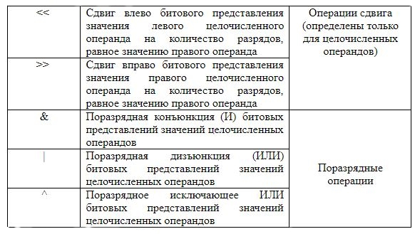
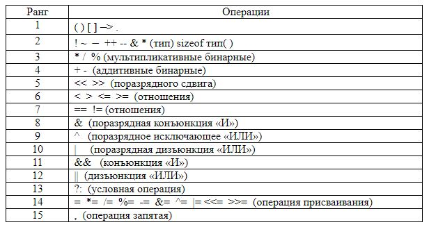
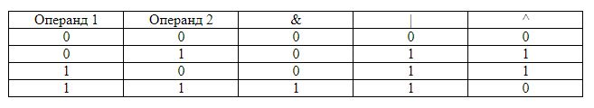
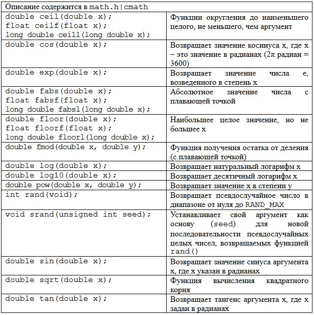

Основы алгоритмизации и программирования
Базовые операции языка C/C++
Содержание лекции
Классификация операций
- Унарные
- Бинарные
- Тернарные
Операции разделяются в зависимости от количества воздействующих выражений. Для унарных - одно выражение, для бинарных - на два, для тернарных - три.
Унарные операции

Бинарные операции
Арифметические операции

Бинарные операции
Операции над битами
Бинарные операции
Операции сравнения и логические операции

Бинарные операции
Операции присваивания

Приоритеты операций
Выражения
Комбинация знаков операций и операндов, результатом которой является определенное значение, называется выражением. Каждый операнд в выражении может быть выражением. Значение выражения зависит от расположения знаков операций и круглых скобок в выражении, а также от приоритета выполнения операций. Каждое выражение состоит из одного или нескольких операндов, символов операций и ограничителей.
15 * f - t % 5
counter < 10
-13
Выражение, после которого стоит точка с запятой – это оператор-выражение.
Операция присваивания (=)
Операция присвоения (=) рассматривается как выражение, имеющее значение левого операнда после присваивания. Присваивание может включать несколько операций присваивания, изменяя значения нескольких операндов.
double x = 1.0;
char c;
int i, j, k;
i = j = x; // эквивалентно j = x; i = j;
i = j + (k = 7) - (c = 20); // c = 20; k = 7; i = j + k + c;
Недопустимыми являются:
- Присвоение константе
- Присваивание функции
- Присваивание результату операции
2 = i + j; // ошибка
getch() = c; // ошибка
(i + 1) = k - 1; // ошибка
Арифметические операции
Арифметические операции задают обычные действия над операндами арифметического типа.
1 % j // i - (i/j) * j
12 % 6 // 0
13 % 6 // 1
Если арифметическая операция содержит операнды различных типов, то компилятор выполняет автоматическое преобразование их типов.Часто арифметические операции используются для обработки чисел, например:
int n = 12345;
int low, i = 5;
low = n % 10; // младшая цифра числа n
n = n / 10; // отбросить младшую цифру числа n
if (n % i == 0) ... // елси n делится нацело на i
n = n * 10 + i; // добавить цифру i к числу n
Операции инкремента и декремента (++, --)
Операции инкремента и декремента (++, --) относятся к унарным арифметическим операциям, которые служат соответственно для увеличения или уменьшения значения, хранимого в переменной целого типа. Например, следующие три оператора дадут один и тот же эффект:
a = a + 1;
a += 1;
a ++;
Операции инкремента и декремента не только изменяют значения переменных, но и возвращают значения. Таким образом, их можно сделать частью более сложного выражения.
Постфиксная и префиксная форма
Имеется постфиксная и префиксная форма операторов инкремента и декремента. В постфиксной форме записи переменная, к которой применена операция, увеличивается (или уменьшается) только после того, как ее значение будет использовано в контексте.
int a = 0, b = 0, c, d;
c = ++ a; // a = 1, c = a = 1
d = b ++; // d = b = 0, b = 1
Типичной ошибкой является попытка использовать в операции инкремента или декремента операнд, отличный от имени простой переменной:
(x - 6) ++; // ошибка
Операции сравнения
Общий вид операции сравнения (отношения):<выражение 1><знак операции><выражение 2>
Выражениями могут быть любые базовые (скалярные) типы. Значения выражений перед сравнением преобразуются к одному типу. Результат операции сравнения – значение 1, если отношение истинно, или 0 в противном случае (ложно). Операция сравнения может использоваться в любых арифметических выражениях:
int b = 5;
int c = 10;
a = b > c; // a = 0
a = (b < c) * 2; // a = 2
Битовые операции
В С/С++ предусмотрены битовые операции для работы с отдельными битами. Эти операции нельзя применять к переменным вещественного типа. Операндами операций над битами могут быть только выражения, приводимые к целому типу. Операции (~, &, |, ^) выполняются поразрядно над всеми битами операндов (знаковый разряд не выделяется).Общий вид операции инвертирования:
~<выражение>
Остальные операции над битами имеют вид:
<выражение 1><знак операции><выражение 2>
Таблица истинности
Ниже приведена таблица истинности логических операций &, | и ^.
Работа с битами
Операция & часто используется для маскирования некоторого множества бит. Операция ! используется для включения (устанавливает в единицу те биты, которые были нулями).Необходимо отличать побитовые операции & и ! от логических бинарных операций && и ||.
int x = 1;
int y = 2;
int c;
c = x Á y; // результат 0, т.к. 0001 Á 0010 = 0000
c = x ÁÁ y; // результат 1, т.к. в операции сравнения оба операнда - истина
Операции сдвига (<<, >>)
Операции сдвига << и >> осуществляют соответственно сдвиг вправо и влево своего левого операнда на число позиций, задаваемых правым операндом. Операции сдвига выполняются также для всех разрядов с потерей выходящих за границы бит.
0x81 << 1 // 10000001 << 1 = 00000010 = 0x02
0x81 >> 1 // 10000001 >> 1 = 01000000 = 0x40
Операции сдвига 2
Если левостоящее выражение имеет тип unsigned, то при сдвиге вправо освобождающиеся разряды гарантированно заполняются нулями (логический сдвиг). Выражения типа signed могут, но не необязательно, сдвигаться вправо с копированием знакового разряда (арифметический сдвиг). При сдвиге влево освобождающиеся разряды всегда заполняются нулями. Если правостоящее выражение отрицательно либо больше длины левостоящего выражения в битах, то результат операции сдвига не определен.
Операции сдвига вправо на k разрядов можно использовать для деления, а сдвиг влево – для умножения целых чисел на 2 в степени k:
x << 1; // x * 2
x >> 1; // x / 2
x << 3; // x * 8
Операция sizeof
Операция sizeof выполняется на этапе компиляции программы и дает константу, которая равна числу байтов, требуемых для хранения в памяти данного объекта. Объектом может быть имя переменной, массива, структуры или просто спецификация типа.
int k = 20;
std::cout << sizeof(int) << sizeof(k);
Операция запятая (,)
Операция запятая (,) используется при организации строго гарантированной последовательности вычисления выражений (используется там, где по синтаксису допустима только одна операция, и для организации множественных выражений, расположенных внутри круглых скобок). Форма записи:выражение 1, ..., выражение N
Выражения вычисляются слева направо. Например:
char X, Y;
(X = Y, Y = getch()) // присваиваем переменной X значение Y, cчитываем символ
// вводимый с клавиатуры, и запоминаем его в Y
int i, j, k, n;
m = (i = 1, j = i++, k = 6, n = i + j + k)
// i = 1, j = i = 1, i = 2, k = 6, n = 2 + 1 + 6, m = n = 9
Преобразование типов
В операциях могут участвовать операнды различных типов, в этом случае они неявно преобразуются к общему типу в порядке увеличения их объема памяти, необходимого для хранения их значений. Поэтому неявные преобразования всегда идут от «меньших» объектов к «большим». Схема выполнения преобразований операндов арифметических операций:
short, char → int → unsigned → long → double float → double
Стоит отметить, что по возможности стоит всегда избегать преобразования типов.
Неявное преобразование
- Значения типов char и short всегда преобразуются в int
- Если любой из операндов имеет тип double, то второй преобразуется в double
- Если один из операндов long, то другой преобразуется в long
При присваивании значение правой части преобразуется к типу левой, который и является типом результата.
float x;
int i;
x = i;
i = x; // float преобразуется в int, дробная часть отбрасывается
Явное преобразование Си
В любом выражении преобразование типов может быть осуществлено явно, в С для этого достаточно перед выражением поставить в скобках идентификатор соответствующего типа:
(тип) выражение;
float a;
int i = 6, j = 4;
a = (i + j) / 3; // a = 3
a = (float)(i + j) / 3; // a = 3.333333
Безопасное преобразование типов C++
В С++ явное преобразование типов производится при помощи следующих операторов:
- static_cast
- const_cast
- reinterpret_cast
- dynamic_cast
Синтаксис операций явного преобразования:
вид_преобразования < требуемый_тип > ( выражение )
Виды преобразований
- const_cast служит для преобразования константного типа в неконстантный
- static_cast - основной тип преобразования, когда значение может быть конвертировано не явно по стандартным правилам
- reinterpret_cast - не выполняет никаких проверок, пытаясь побитово интерпретировать объект как объект нужного типа.
- dynamic_cast используется для динамического приведения типов во время выполнения.
Примеры
float f = 97.0;
char c = static_cast< char >(f);
int u = 34;
const int& const_ref = u;
int& non_const_ref = const_cast<int&>(const_ref);
char n[4] = "\b\0\0";
int* num = reinterpret_cast<int*>(n);
Стандартные математические функции
В любой программе кроме операторов и операций используются средства библиотек, входящих в среду программирования, которые облегчают создание программ. Часть библиотек стандартизована и поставляется с компилятором. В стандартную библиотеку входят функции, макросы, глобальные константы. Это файлы, хранящиеся в папке include.
Математические функции языка С декларированы в файлах <сmath> и <stdlib.h>.
Список основных математических функций:
Использование
cout << "log10(10) = " << log10(10.0) << endl; // 1
cout << "log10(1) = " << log10(1.0) << endl; // 0
cout << "log(2.718281) = " << log(2.718281) << endl; // 1
cout << "sqrt(9) = " << sqrt(9.0) << endl; // 3
cout << "pow(2,3) = " << pow(2.0,3.0) << endl; // 8
cout << "abs(0) = " << abs(0.0) << endl; // 0
cout << "abs(-5) = " << abs(-5.0) << endl; // 5
cout << "ceil(3.14) = " << ceil(3.14) << endl; // 4
cout << "ceil(-2.4) = " << ceil(-2.4) << endl; // -2
cout << "floor(3.14) = " << floor(3.14) << endl; // 3
cout << "floor(-2.4) = " << floor(-2.4) << endl; // -3
cout << "fmod(2.4/2.0) = " << fmod(2.4,2.0) << endl; // 0.4